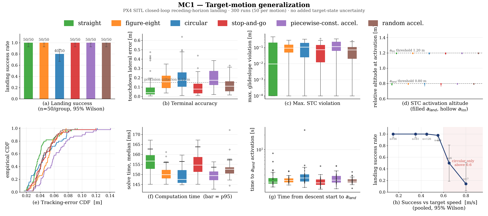

placeholder still — replace with 6–10 s loop cut from DJI_0018.MP4 (4K/120 fps)
Compound State-Triggered Constrained DDP for Receding-Horizon Quadrotor Landing on a Moving Platform
ICCAS 2026
SungJin Noh · Yong-Hee Kim · Yeohosua Kim · Kwang-Ki K. Kim
Department of Electrical and Computer Engineering, Inha University
Figma slide 2 — three cone panelsFigma slide 2. Also available for this beat: slide 4 powered-descent example.
(a) Planned trajectory for a stationary targetPaper, Fig. 2a(b) State and input histories during the open-loop solvePaper, Fig. 2b
(a) Trajectories in the world and target-centered framesPaper, Fig. 3a(b) State and input histories during online replanningPaper, Fig. 3b
Trajectories from the 100-sample benchmark: cSTC-DDP (blue) and the sequential-convex arm (orange). Figma slide 9 adds a six-panel comparison and an enforcement-strategy table.Paper, Fig. 4
Benchmark over 100 randomized initial conditionsPaper, Tab. 1
Approach tracking-error distributions across the three conditionsPaper, Fig. 5
Touchdown locations relative to the landing padPaper, Fig. 6Solve-time statistics across the three conditionsPaper, Fig. 7
Figma slide 3 — related-work landscapepositioning map (fixed sequence → mode logic → temporal logic vs. costs → hard@nodes → hard cont-time), plus the 2018–2026 timeline
Figma slide 10 — ROS architectureCoManDO planner, state assembly, trajectory replayer, platform adapter, target_publisher, plus the six motion glyphs
Problems with landing on a moving platform
A glideslope cone imposed over the entire planning horizon admits only a narrow family of initial conditions. Three treatments of the constraint are available, and each degrades the problem in a different way.
start over the platform: the only admissible initial condition is directly above the platform, which deletes the lateral approach and trivialises the problem.
ride the boundary: if the optimum leaves no margin, so an ordinary tracking error puts the next initial condition outside the cone.
widen the cone: opening it far enough to admit a realistic start leaves it too loose to shape the approach at all.
All three enforce the glideslope everywhere and run into different kinds of problems ... So why not impose the cone only where it actually means something?
Signal Temporal Logic in Optimal Control
Approaches to state-dependent logic in trajectory optimization divide by where the condition is enforced and by what is required of the solver. Mixed-integer and hybrid formulations introduce binaries or a prescribed mode sequence; smooth-robustness methods relax the logic into the cost; state-triggered constraints keep the condition hard while remaining continuous.
Compound state-triggered constraints and their continuous-time extension were developed within sequential convex programming. The formulation presented here carries that construction into differential dynamic programming.
Receding-Horizon Loop
Because the constant-acceleration predictor is only locally valid, the OCP is re-solved at each replanning instant from the latest state estimate. Each solve spans a fixed number of \(N\) intervals with free time steps \(\Delta t_k\), so the horizon duration \(\sum_{k=0}^{N-1}\Delta t_k\) is itself an optimization variable and shrinks as the vehicle approaches touchdown.
Only a short prefix of the resulting plan is executed, and the next solve is warm-started from the shifted solution. The full horizon is retained at every cycle so that the terminal touchdown conditions and STC approach bounds remain enforced.
Final-Approach Constraints
The final approach uses a compound state-triggered constraint (STC) with trigger functions
Each trigger is active for \(g<0\); their AND therefore applies the tightened bounds only below \(z_{\mathrm{trig}}\) and within \(R_{\mathrm{cap}}\), so lateral capture precedes tightening.
Let \(\bm d_k\le\bm 0\) collect the path bounds and the time-step bounds. Let \(\bm g_{\mathrm{trig},k}\) collect the two trigger functions, and let \(\bm c_{\mathrm{con},k}\) collect the six consequence functions; vector inequalities are componentwise. For \(k=0,\ldots,N-1\), the complete landing OCP is
Differential Dynamic Programming
The physical state is extended with absolute time \(t_k\) and the scalar STC accumulator \(y_k\) to form
Related constrained-DDP methods include ALTRO and IPDDP; here, constraints use the primal-dual ALM/IPM structure of CALIPSO: cone inequalities are absorbed by IPM log barriers, which require strictly feasible iterates, while terminal equalities are handled by an ALM update, which accepts infeasible iterates.
State-Triggered Constraints in DDP
An STC pairs a trigger function \(g(\bm x)\) with a bound \(c(\bm x,\bm u)\le 0\) that must hold only in the region where \(g(\bm x)<0\). Adopting the D-GMSR zero-set form, with \((a)_+=\max(0,a)\), this state-conditioned bound is encoded by the scalar
Squaring the positive-part factors ensures \(C^1\) smoothness at every switching boundary, which is essential for gradient-based optimization. Following the CT-cSTC reformulation, the selected STC measures are aggregated into a single nonnegative integrand, and a scalar accumulator \(y\), initialized at \(y_0=0\), evolves according to
The reference SCP formulation expresses this continuous-time condition as a per-interval inequality \(y_{k+1}-y_k\le\beta_k\). This per-interval form does not transfer to DDP: DDP inequalities are enforced through interior-point log barriers, which require strictly feasible iterates. We therefore enforce this requirement on \(y\) through a single terminal equality rather than through per-interval inequalities.
\[ y_0 = 0,\qquad y_N = 0 \;\Longrightarrow\; H_i = 0 \ \text{ at every RK4 stage of every interval} \]
Proposition 1. Consider the RK4 accumulator update above, where \(H_i\ge 0\) at all RK4 stages and \(\Delta t_k>0\). If \(y_0=0\) and the terminal equality \(y_N=0\) holds, then \(H_i=0\) for every RK4 stage of every interval.
The trigger enters the backward pass through the \(y_k\) row of the augmented dynamics. Partitioning \(V_{\tilde x,k+1}=[\,V_{x,k+1}^\top,\,V_{t,k+1},\,V_{y,k+1}\,]^\top\), the Bellman chain rule expands by block rows as
The terminal equality \(y_N=0\) produces a nonzero \(V_{y,N}\), and this gradient propagates backward through every stage.
Randomized Initial-Condition Benchmark
Tab. 1 compares the proposed cSTC-DDP with an OpenSCvx baseline using per-interval CT-cSTC. Both solve the same OCP from 100 fixed initial conditions (ICs), sampled with \(r_{xy}\in[0.25,4.5]\) m, \(r_z\in[1.7,3.0]\) m, and \(\lVert{}_{\mathcal T}\bm v_{\mathcal B}\rVert_2\in[0.2,2.95]\) m/s; below \(r_z=1.8\) m, \(r_{xy}\le 1.1\) m. Native grids use 80 DDP intervals and 21 SCvx nodes.
A landing requires finite outputs, \(\lVert\bm e_p\rVert\le 0.10\) m, \(\lVert\bm e_v\rVert\le 0.30\) m/s, and maximum hard-path excess at most \(10^{-2}\). Error medians use compliant landings; solve times use all runs and exclude initialization and auditing. Unlike the 180 ms hardware replans, these full-horizon solves have no warm start.
The results show seven more compliant cSTC-DDP landings, lower median position error, and shorter solve times.
With the same solver, always enforcing the final limits makes all 100 ICs infeasible at \(\bm x_0\) (85 speed, 88 glideslope; union 100); removing them also lands 100/100, but every trajectory exceeds at least one final-approach safety limit and is therefore unsuitable for hardware execution.
SITL Target-Motion Evaluation
Gazebo-based software-in-the-loop (SITL) simulations evaluate six planar target motions: straight, circular, figure-eight, stop-and-go, piecewise-acceleration, and random-acceleration.
Across 50 trials per motion, peak target speeds are 0.40–0.50 m/s and peak accelerations are 0–0.328 m/s²; 290/300 trials land successfully (40/50 circular and 50/50 otherwise).
Another 60 circular-motion trials (20 per level) apply zero, nominal, or high Gaussian target-estimate uncertainty, with a fixed per-trial bias drawn at \(0.5\sigma\). All 60 trials land successfully.

MC1 — target-motion generalization. PX4 SITL closed-loop receding-horizon landing, 300 runs at 50 per motion.SITL
ROS wrapper for online planning and execution
The planner is exposed as a ROS 2 node with a solver core that carries no ROS types. State assembly rebases the vehicle odometry into the target-centered frame each solve; the solver returns a state, control and feedback-gain triple; and a replayer interpolates the plan against wall-clock time, handing off between the active and pending horizons.
A platform adapter isolates the airframe interface, so the same planner drives either a PX4 vehicle through MAVROS or a Crazyflie through Crazyswarm 2. Target kinematics enter through a separate publisher, which allows the estimator to be replaced without touching the planner.
Hardware Landing Experiments
A Crazyflie 2.1 quadrotor lands on an ST-mini unmanned ground vehicle (UGV), which serves as the moving target. A Qualisys motion-capture system streams pose measurements for both vehicles over ROS 2; onboard inertial measurement unit (IMU) data supplied through Crazyswarm 2 complete the Crazyflie’s state estimate. The DDP solver runs off-board on an AMD Ryzen 7 4800HS CPU as a ROS 2 node.
At each replanning instant, it reads the current relative state, holds the latest target acceleration estimate constant, and re-solves the landing OCP using the shifted previous solution as a warm start. Replanning is event-driven at approximately 5 Hz, with median solve times of 178–188 ms across all conditions.
Landing timing and peak active-phase excesses
The STC trigger fires at \(t_{\mathrm{trig}}=6.56\)–\(8.19\) s in all runs, followed by a descent phase of 0.98–1.42 s.
Speed, tilt, and thrust show zero executed excess; body-rate values use Crazyswarm 2’s deg/s-to-rad/s conversion.
Landing timing and peak active-phase excessesPaper, Tab. 2
Metric
Simulated
Circling
Random
ttrig [s]
6.63
6.56
8.19
Landing time [s]
7.82
7.98
9.17
Descent time [s]
1.20
1.42
0.98
Glideslope excess [m]
0
0.098
0.011
Body-rate excess [rad/s]
0.048
0.057
0.477
Demonstration Video
VideoTO ADD — embed or self-hosted cut from the DJI footage
Code
TO ADD — repository link and build instructions.
BibTeX
@inproceedings{noh2026cstcddp,
title = {Compound State-Triggered Constrained {DDP} for Receding-Horizon
Quadrotor Landing on a Moving Platform},
author = {Noh, SungJin and Kim, Yong-Hee and Kim, Yeohosua and Kim, Kwang-Ki K.},
booktitle = {International Conference on Control, Automation and Systems (ICCAS)},
year = {2026}
}
References
Z. Shen, G. Zhou, H. Huang, C. Huang, Y. Wang, and F.-Y. Wang, “Convex optimization-based trajectory planning for quadrotors landing on aerial vehicle carriers,” IEEE Trans. Intell. Vehicles, vol. 9, no. 1, pp. 138–150, Jan. 2024.
L.-Y. Lo, B. Li, C.-Y. Wen, and C.-W. Chang, “Experimental nonrobocentric dynamic landing of quadrotor UAVs with on-ground sensor suite,” IEEE Trans. Instrum. Meas., vol. 73, Art. no. 7509113, 2024.
J. Chen, L. Xu, H. Ebel, and P. Eberhard, “An online optimization-based trajectory planning approach for cooperative landing tasks,” in Proc. IEEE/RSJ IROS, 2025, pp. 12108–12114.
B. Zhang et al., “CoNi-MPC: Cooperative non-inertial frame-based model predictive control,” IEEE Robot. Autom. Lett., vol. 8, no. 12, pp. 8082–8089, Dec. 2023.
D. Falanga, A. Zanchettin, A. Simovic, J. Delmerico, and D. Scaramuzza, “Vision-based autonomous quadrotor landing on a moving platform,” in Proc. IEEE SSRR, 2017, pp. 200–207.
K. Xia, S.-M. Lee, W. Chung, Y. Zou, and H. Son, “Moving target landing of a quadrotor using robust optimal guaranteed cost control,” IEEE/CAA J. Autom. Sinica, vol. 10, no. 3, pp. 819–821, Mar. 2023.
P. Serra, R. Cunha, T. Hamel, D. Cabecinhas, and C. Silvestre, “Landing of a quadrotor on a moving target using dynamic image-based visual servo control,” IEEE Trans. Robot., vol. 32, no. 6, pp. 1524–1535, Dec. 2016.
M. Szmuk, T. P. Reynolds, B. Açıkmeşe, M. Mesbahi, and J. M. Carson, “Successive convexification for 6-DoF powered descent guidance with compound state-triggered constraints,” in Proc. AIAA SciTech Forum, 2019, Art. no. AIAA 2019-0926.
S. Uzun, P. Elango, P.-L. Garoche, and B. Açıkmeşe, “Optimization with temporal and logical specifications via generalized mean-based smooth robustness measures,” arXiv:2405.10996, 2024.
S. Uzun, B. Açıkmeşe, and J. M. Carson, “Sequential convex programming for 6-DoF powered descent guidance with continuous-time compound state-triggered constraints,” in Proc. AIAA SciTech Forum, 2025, Art. no. AIAA 2025-1895.
T. A. Howell, K. Tracy, S. Le Cleac’h, and Z. Manchester, “CALIPSO: A differentiable solver for trajectory optimization with conic and complementarity constraints,” in Robotics Research, ser. SPAR, vol. 27, 2023, pp. 504–521.
T. A. Howell, B. E. Jackson, and Z. Manchester, “ALTRO: A fast solver for constrained trajectory optimization,” in Proc. IEEE/RSJ IROS, 2019, pp. 7674–7679.
A. Pavlov, I. Shames, and C. Manzie, “Interior point differential dynamic programming,” IEEE Trans. Control Syst. Technol., vol. 29, no. 6, pp. 2720–2727, Nov. 2021.
C. R. Hayner et al., “OpenSCvx: An open-source modular and extensible nonlinear trajectory planning package,” arXiv:2608.21631, 2026.
D. Mellinger and V. Kumar, “Minimum snap trajectory generation and control for quadrotors,” in Proc. IEEE ICRA, 2011, pp. 2520–2525.